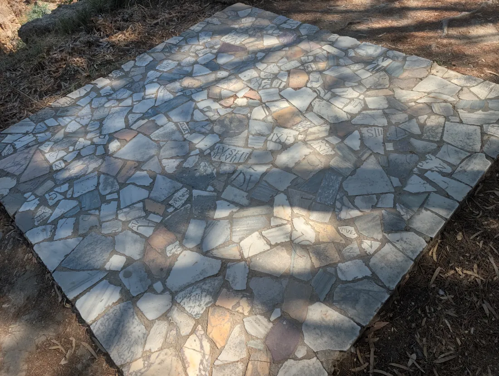
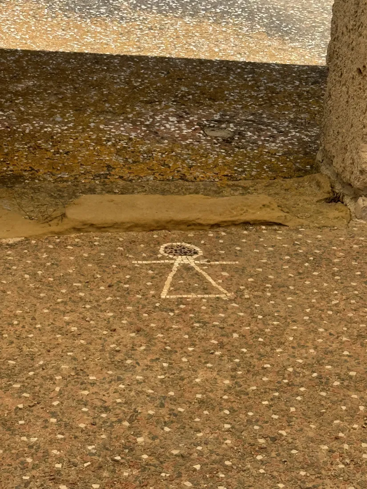

With Dr. Laura Harrison and Dr. Caroline Nickerson, hosted by the Embassy of Tunisia with Tanit XR and TAYP. Entry is by guest list, so a seat is only confirmed once you have filled in this form.
Your confirmation and the details for the evening come by email. Questions: info@tanitxr.org.

Over the past year, Dr. Laura Harrison and Dr. Caroline Nickerson have been at the centre of Tanit XR: leading its scientific programme, building partnerships with universities and institutions, running hackathons and workshops, and travelling to Tunisia this summer to work alongside Tunisian colleagues at the sites themselves. They will talk about that year, what they saw, and where it goes next. Ines Said, founder of Tanit XR, opens the evening and introduces them.
Tanit XR documents Tunisian heritage with photogrammetry, lidar and Gaussian splatting, much of it captured on ordinary phones by trained volunteers, and brings the results to anyone in the world through a browser, a headset or a virtual museum. The collection is already open at tanitxr.org/explore, and VR headsets will be in the room for anyone who would like to stand inside it.
Tanit XR is run by volunteers in many countries, most of whom had no connection to Tunisia when they joined. They meet every week, study Tunisian history together, and several have since travelled to Tunisia or now speak about its heritage in their own cities. That exchange, with technology as the bridge, is what the evening is about. Tunisians and friends of Tunisia equally welcome; students very welcome; no technical background needed.
An archaeologist who specialises in digital documentation, from lidar and photogrammetry to immersive technology, she was the founding director of the Access 3D Lab at the University of South Florida, with museum experience at institutions like the Smithsonian and the Nouveau York State Museum. She is the author of two books on archaeology and digital heritage, Associate Editor of the journal Studies in Digital Heritage, and a Commissioner on the City of Tampa's Historic Preservation Board.
Executive Director and co-founder of Florida Community Innovation, the nonprofit that serves as Tanit XR's fiscal sponsor. Her work brings together civic engagement, public interest technology and citizen science, including roles with SciStarter, CitSci and the NASA-funded EMERGE projet. She holds a PhD in Agricultural Education and Communication from the University of Florida and a Master of Public Policy from American University.
Opened and hosted by Ines Said, founder of Tanit XR, a Tunisian XR artist and developer from Nabeul and a 2026 Auggie Awards finalist.
